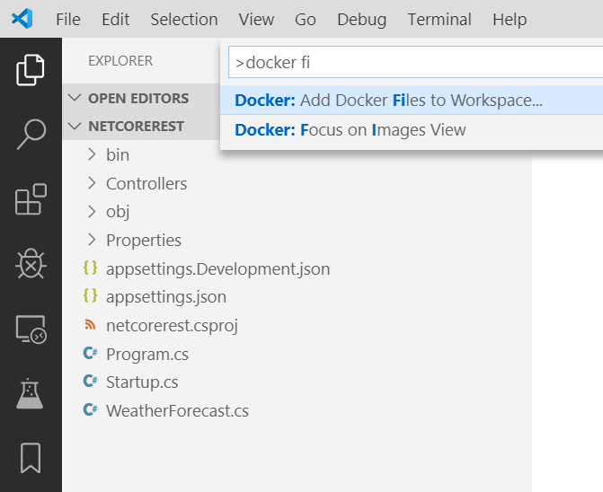
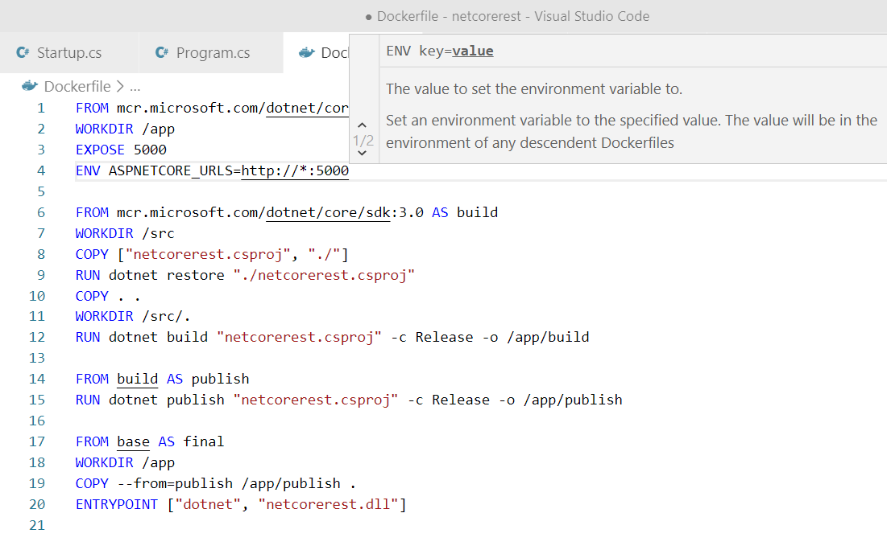
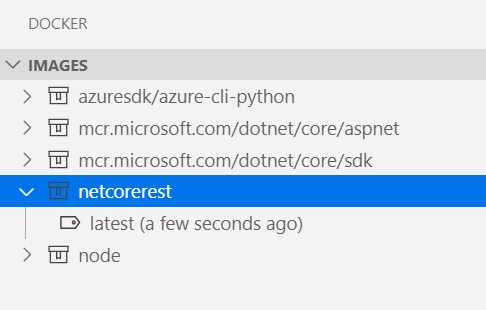
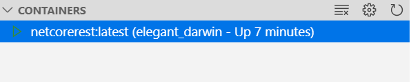
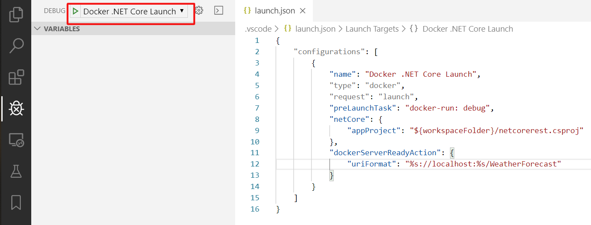

ASP.NET Core in a container
In this guide you will learn how to:
- Create a
Dockerfilefile describing a simple .NET Core service container. - Build, run, and verify the functionality of the service.
- Debug the service running as a container.
Prerequisites
- Docker and the VS Code Docker extension must be installed as described on the overview.
- For .NET development, install .NET Core SDK.
- Microsoft C# for Visual Studio Code extension.
Create a .NET Core Web API project
Create a folder for the project.
Open developer command prompt in the project folder and initialize the project:
dotnet new webapi --no-https
Add Docker files to the project
Open the project folder in VS Code.
Wait for the C# extension to prompt you to add required assets for build and debug, and choose Yes. You can also open the Command Palette (
kb(workbench.action.showCommands)) and use the .NET: Generate Assets for Build and Debug command.Open Command Palette (
kb(workbench.action.showCommands)) and use Docker: Add Docker Files to Workspace... command:
Use .NET: ASP.NET Core when prompted for application platform.
Choose Windows or Linux when prompted to choose the operating system.
Windows is only applicable if your Docker installation is configured to use Windows containers.
You will be asked if you want to add Docker Compose files. We will not use Docker Compose in this tutorial, so both "Yes" and "No" answers are fine.
Change the port for application endpoint to
5000.Dockerfileand.dockerignorefiles are added to the workspace.The extension will also create a set of VS Code tasks for building and running the container (in both debug- and release configuration, four tasks in total), and a debugging configuration for launching the container in debug mode.
Build the application
Open terminal prompt (
kb(workbench.action.terminal.toggleTerminal)).Issue
dotnet buildcommand to build the application:~/code/scratch/netcorerest$ dotnet build Microsoft (R) Build Engine version 16.3.0+0f4c62fea for .NET Core Copyright (C) Microsoft Corporation. All rights reserved. Restore completed in 18.97 ms for ~/code/scratch/netcorerest/netcorerest.csproj. netcorerest -> ~/code/scratch/netcorerest/bin/Debug/netcoreapp3.0/netcorerest.dll Build succeeded. 0 Warning(s) 0 Error(s)
Add an environment variable to the image
You can use the Docker extension to author Docker files. The extension provides completions and contextual help. To see these capabilities add an environment variable to your service image by following these:
Open the
Dockerfilefile.Use
ENVinstruction to add an environment variable to the service container image. The instruction should be placed in thebasestage of theDockerfile(the first stage in the file). Set theASPNETCORE_URLSvariable tohttp://*:5000:
Note how the Docker extension lists all available Dockerfile instructions and describes the syntax.
The Docker extension uses the
basestage of theDockerfileto create a debug version of the container image for your service. Put theASPNETCORE_URLSenvironment variable definition in thebasestage to have this variable available in both debug and release versions of the container image.Save the
Dockerfilefile.
Build the image
Open Command Palette (
kb(workbench.action.showCommands)) and issue Docker Images: Build Image... command.Open Docker Explorer and verify that the new image is visible in the Images tree:

Test the service container
Right-click on the image built in previous step and choose Run or Run Interactive. The container should start and you should be able to see it in the "Containers" pane of the Docker Explorer:

Open the web browser and navigate to http://localhost:5000/WeatherForecast. You should see weather data in JSON format, similar to following:
[ {"date":"2019-11-07T23:31:57.0527092+00:00","temperatureC":4,"temperatureF":39,"summary":"Bracing"}, {"date":"2019-11-08T23:31:57.0539243+00:00","temperatureC":-19,"temperatureF":-2,"summary":"Freezing"}, {"date":"2019-11-09T23:31:57.0539269+00:00","temperatureC":2,"temperatureF":35,"summary":"Freezing"}, {"date":"2019-11-10T23:31:57.0539275+00:00","temperatureC":-4,"temperatureF":25,"summary":"Freezing"}, {"date":"2019-11-11T23:31:57.053928+00:00","temperatureC":9,"temperatureF":48,"summary":"Bracing"} ]By default Docker will assign a randomly chosen host port to a port exposed by a container (the container port). In our application the exposed (container) port is 5000. When you issue Run command for an image, VS Code will try to use the same port number for the host port and container port. This makes it easy to remember which port to use to communicate with the container, but it won't work if the host port is already in use.
If you cannot see the data from the container in your browser, make sure there are no errors reported by the
docker runcommand (look at the command output in the terminal window). You can also verify which host port is using by the container by right-clicking the container in the Docker Explorer and choosing Inspect. This will open a JSON document that describes the container in detail. Search forPortBindingselement, for example:"PortBindings": { "5000/tcp": [ { "HostIp": "", "HostPort": "5000" } ] },When done testing, right-click the container in the Docker Explorer and choose Stop.
Debug in container
When Docker files were added to the application, the Docker extension also added a VS Code debugger configuration for debugging the service when it is running inside a container. The extension will automatically detect the protocol and port that the service is using and point the browser to the service, but we need to tell it what URL path to use.
Set a breakpoint at the beginning of the code for the
Get()method of theControllers/WeatherForecastController.csfile.Open
.vscode/launch.jsonfile and findDocker .NET Core Launchdebug configuration.Add
dockerServerReadyActiontoDocker .NET Core Launchconfiguration:"dockerServerReadyAction": { "uriFormat": "%s://localhost:%s/WeatherForecast" }Make sure the configuration is selected as active:

Start debugging (
kb(workbench.action.debug.start)).- The debug version of the service container builds and starts.
- The browser opens to request a new weather forecast.
- The breakpoint in the
WeatherForecastControlleris hit.
You can use specific port on the host by changing the Docker run options used by docker-run: debug task (defined in .vscode/tasks.json file). For example, if you want to use the same port (5000) to expose the service, the docker-run: debug task definition would look like this:
{
"type": "docker-run",
"label": "docker-run: debug",
"dependsOn": [
"docker-build: debug"
],
"dockerRun": {
"ports": [
{ "hostPort": 5000, "containerPort": 5000 }
]
},
"netCore": {
"appProject": "${workspaceFolder}/netcorerest.csproj",
"enableDebugging": true
}
Next steps
You're done! Now that your container is ready, you may want to: